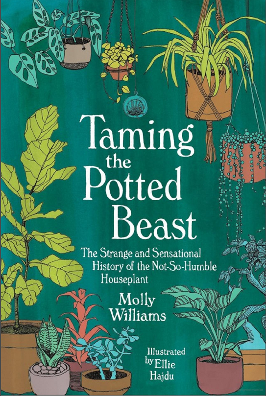

History of Houseplants
Taiming the Potted Beast

The Fertile Crescent
According to Molly Williams; Plants, or rather the domestication of plants have a long history. The history began during the agricultural revolution around the Fertile Crescent, now known to span modern-day middle eastern countries at around 10,000bce. When wild grains grew to provide sustenance. These grains are the same cereal grains of today and were cultivated during this Neolithic era. At the same time, domesticating lentils, flax and chickpeas occurred. During this time, crops grew because of early irrigation structures between the Tigris and Euphrates rivers. From this point forward, the more plants were domesticated, and the more their popularity evolved and eventually were brought indoors.

The Ancient Power Houses
The ancient Egyptians, Romans, and Greeks kept cultivated plants for decorative purposes. They inhabited homes and public spaces. For thousands of years, plants went from being utilitarian (food provision) to being status symbols for the wealthy. The first gardening guide appeared during this era between 350BCE and 287BCE by Greek botanist Theophrastus, called “Historia Plantarum,” a series of ten books on plants and their origins. Theophrastus studied under Plato, then Aristotle, and then became head of the Lyceum after Aristotle left Greece in Exile.

The Ancient Romans and Health
The Roman Greenhouse was invented; because Emperor Tiberius, in 30CE, became deathly ill, and was told by physicians to eat cucumbers daily. Not an easy feat by any means. These greenhouses were not anything like we have today. Many were made of mica and selenite for protection, and only housed small potted plants. They were initially called solariums, or specularia. The larger greenhouses were built with high walls and transparent ceilings, all to furnish Tiberius with cucumbers, which allowed him to live several years longer.
Illuminating Anecdotes
While this brief introduction into the history and origins of plant cultivations and their domesticity, including early plant growth mechanisms. There is so much more interesting information in this book. This book is evolutionary, and therefore, espouses information through a timeline of events up to our modern times.
